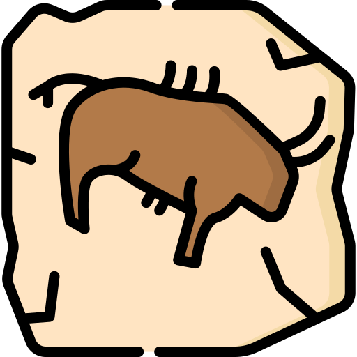
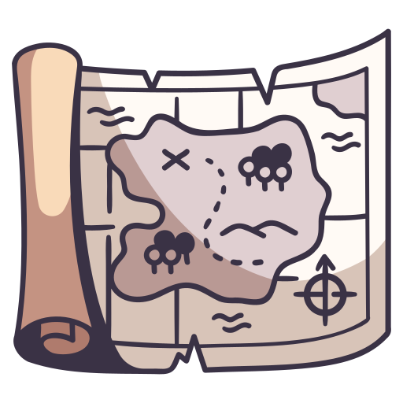

Biblioteca de Humanidades
Geografía e Historia
(9)

MATERIA

Prehistoria y arqueología
Geografía, Viajes, Exploración y Cartografía book_5 Biografías, Heráldica, Genealogía library_books Filosofía de la historia, Diplomática, Cronología, Archivística, Paleografía DICCIONARIOS
HISTORIA DE ESPAÑA
HISTORIA DE ASTURIAS
DICCIONARIOS
HISTORIA DE ESPAÑA
HISTORIA DE ASTURIAS
 Historia antigua
Historia de Egipto
Historia del Pueblo Judío
Historia de Roma antigua
Historia de Grecia antigua
Historia de Europa
Historia de Inglaterra y Gran Bretaña
Historia de Alemania y Austria
Historia de Francia
Historia de Italia
Historia de Rusia y de la Unión Soviética
Historia de Bizancio
Historia de Asia
Historia de África
Historia de Ámerica
Historia de Latinoamérica
Historia antigua
Historia de Egipto
Historia del Pueblo Judío
Historia de Roma antigua
Historia de Grecia antigua
Historia de Europa
Historia de Inglaterra y Gran Bretaña
Historia de Alemania y Austria
Historia de Francia
Historia de Italia
Historia de Rusia y de la Unión Soviética
Historia de Bizancio
Historia de Asia
Historia de África
Historia de Ámerica
Historia de Latinoamérica